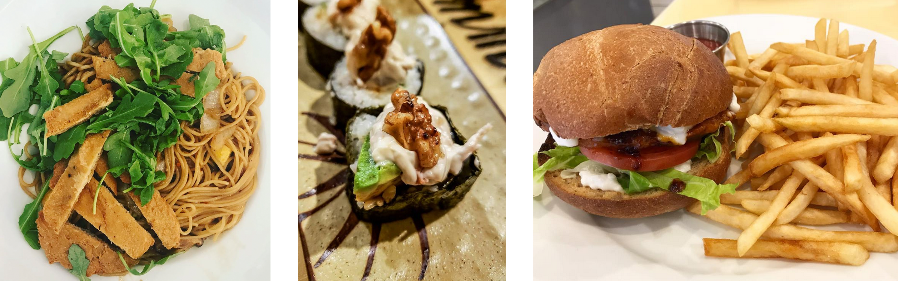

Phone: (732) 970-6129
Vegan Tree strives to serve creative vegan takes on Asian, Italian, and American inspired dishes. Featured above are our kung pao spaghetti, avocado and cheese sushi, and sriracha seitan burger.
952 Rte 34 Suite 4
Matawan, NJ 07747
Unfortunately, no delivery at this time
Please call us with any questions. Follow us on Instagram @vegantreenj